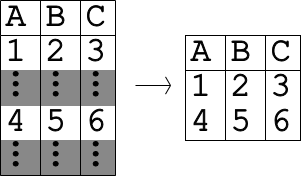
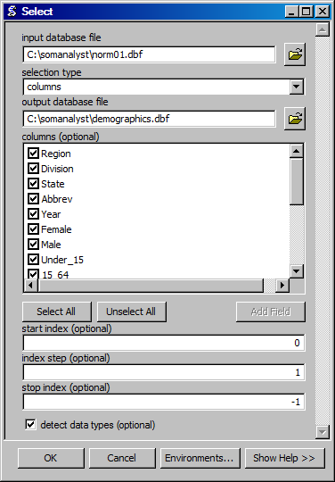

Select Data
Creates a database file with the selected values.

ArcGIS Reference

Parameters
input database file
- selection type
- The way in which data will be selected.
- output database file
- The output databse file.
- columns
- The columns to include in the data selection.
- start index
- The index from which to begin the selection.
- index step
- The increment from the start index for the next selection.
- stop index
- The index at which to stop selection. Negative indicies are equivalent of indexing from the end.
- detect data types
- An optional mode that automatically changes the data types in a column based on the values it contains. This mode is usueful if the data will be processed further using mathmatical operations.
Code Reference
-
uiSelect.select(inName, selectionType, outName, columns, start, step, stop, detectTypes)
Creates a DBF file with the rows from a DBF file that meet the selection criteria.
| Arguments : |
- inName
The input DBF filename.
- selectionType
The select type (inclulsion or exclusion).
- outName
The ouput DBF filename.
- columns
The columns to keep. If no columns are specified, all columns are kept.
- start
The start index for rows.
- step
The step between idecies for rows.
- stop
The stop index for rows.
- detectTypes
An optional mode that detects and sets the data types for each column in the output file.
|
|---|